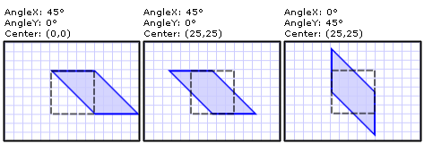

Практическое руководство. Наклон элемента
В этом примере показано, как использовать SkewTransform для отклонения элемента. Отклонение (или срез) — это преобразование, которое неравномерно растягивает пространство координат. Одним из примеров использования SkewTransform является имитация Трехмерный глубины в Двумерный объектов.
Используйте CenterX и CenterY точка свойства для указания центра SkewTransform.
Используйте AngleX и AngleY свойства для задания угла наклона осей x и y и отклонения текущей системы координат по этим осям.
Чтобы спрогнозировать результат наклона, обратите внимание на AngleX Наклоняет значений по оси x относительно исходной системы координат. Таким образом, для AngleX 30, ось y поворачивается на 30 градусов через начало координат и Наклоняет значений в x-на 30 градусов от начала координат. Аналогичным образом AngleY 30 наклон значений y фигуры на 30 градусов от начала координат. Обратите внимание, что это не то же самое, что перенос (перемещение) системы координат на 30 градусов по осям X и Y.
В следующем примере применяется горизонтальное отклонение на 45 градусов Rectangle относительно центральной точки (0,0).
Пример
<Rectangle
Height="50" Width="50" Fill="#CCCCCCFF"
Stroke="Blue" StrokeThickness="2"
Canvas.Left="100" Canvas.Top="100">
<Rectangle.RenderTransform>
<!-- Applies a horizontal skew of 45 degrees
from a center point of (0,0). -->
<SkewTransform CenterX="0" CenterY="0" AngleX="45" AngleY="0" />
</Rectangle.RenderTransform>
</Rectangle>
В следующем примере применяется горизонтальное отклонение на 45 градусов Rectangle относительно центральной точки (25, 25).
<Rectangle Height="50" Width="50" Fill="#CCCCCCFF"
Canvas.Left="100" Canvas.Top="100"
Stroke="Blue" StrokeThickness="2">
<Rectangle.RenderTransform>
<!-- Applies a horizontal skew of 45 degrees
from a center point of (25,25). -->
<SkewTransform CenterX="25" CenterY="25" AngleX="45" AngleY="0" />
</Rectangle.RenderTransform>
</Rectangle>
В следующем примере применяется вертикальное отклонение на 45 градусов Rectangle относительно центральной точки (25, 25).
<Rectangle Height="50" Width="50" Fill="#CCCCCCFF"
Stroke="Blue" StrokeThickness="2"
Canvas.Left="100" Canvas.Top="100">
<Rectangle.RenderTransform>
<!-- Applies a vertical skew of 45 degrees
from a center point of (25,25). -->
<SkewTransform CenterX="25" CenterY="25" AngleX="0" AngleY="45" />
</Rectangle.RenderTransform>
</Rectangle>
На следующем рисунке показаны отклонения, использованные в этом примере.

Показаны три примера SkewTransform
Полный пример см. в разделе Примеры двумерных преобразований.